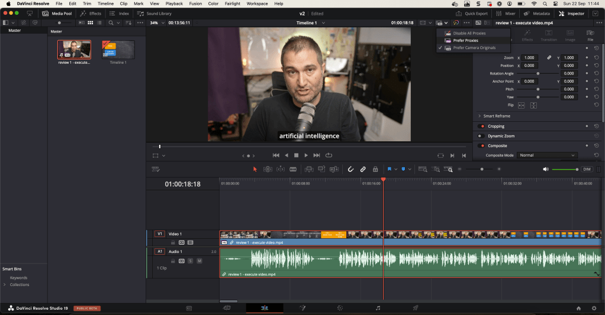

🚀 How to Improve Playback Performance in DaVinci Resolve: A Step-by-Step Guide with Emojis!
Generate proxy not enough

🎬 What I Want to Achieve: Better, smoother playback while editing in DaVinci Resolve using optimized media and render cache features. Below is a detailed guide to help you achieve seamless performance with fewer lags. Let's dive right in!
💡 1. Enable Optimized Media
To improve playback, we need to make use of optimized media by creating lower-resolution proxies.
1️⃣ Go to Preferences:
DaVinci Resolve > Preferences > System > Media Storage
➡️ Here, add a fast storage location for your optimized media.
2️⃣ Go to Project Settings:
Click the ⚙️ gear icon in the bottom-right corner.
3️⃣ Navigate to Master Settings:
Find the Optimized Media and Render Cache section.
➡️ Choose the appropriate optimized media resolution and format (select a lower resolution for smoother playback, such as quarter resolution or half resolution).
🖼️ Screenshot Pause: Insert a screenshot showing the Master Settings window with the Optimized Media options.
⚡ 2. Generate Optimized Media
Once the settings are ready, let's generate the optimized media.
1️⃣ Right-click on your clips in the Media Pool or Timeline.
2️⃣ Choose Generate Optimized Media from the dropdown.
➡️ DaVinci Resolve will now create proxies (lower-resolution versions of your footage) to help with smoother playback.
🔧 3. Use Render Cache
The Render Cache feature allows you to pre-render parts of your timeline to ensure better playback, especially when using heavy effects.
1️⃣ Enable Render Cache:
Go to Playback > Render Cache > Smart or User.
-
Smart: DaVinci Resolve automatically detects clips that need caching.
-
User: You manually select the clips you want to cache.
2️⃣ Manual Caching:
If you choose User, you can right-click on clips and select Render Cache Color Output or Fusion Output.
➡️ DaVinci will cache only those clips, leading to better performance.
🖼️ Screenshot Pause: Add a screenshot showing the Render Cache dropdown in action.
🖥️ 4. Force Render (Manual)
If you want even more control, you can force render sections of your timeline manually. Simply:
1️⃣ Right-click on a specific part of the timeline or clip.
2️⃣ Choose Render in Place.
➡️ This forces DaVinci Resolve to render that section in full resolution, making playback buttery smooth.
💡 Bonus Tip: Adjust Playback Resolution
You can also reduce the timeline resolution for smoother playback.
1️⃣ Go to Project Settings:
⚙️ Adjust the Timeline Resolution to something lower (e.g., HD instead of 4K). This won’t affect your final output but will make editing smoother.
🖼️ Screenshot Pause: Add a screenshot showing where to adjust Timeline Resolution.
🔗 Connect with Me
I hope these tips help you get the most out of DaVinci Resolve. Feel free to reach out if you have any questions!
Let me know how these tips worked for you! 😊
Imported from rifaterdemsahin.com · 2024